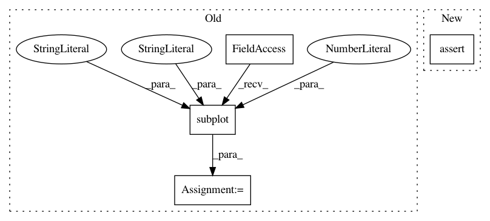

90def2a781c5df9ff0e74eb45ba8c0f0027e8450,examples/plot_geodesics_h2.py,,main,#,15
Before Change
t = np.linspace(0, 1, n_steps)
points = geodesic(t)
ax = plt.subplot(111, projection="3d", aspect="equal")
visualization.plot(points, ax, space="S2")
plt.show()
After Change
def main():
initial_point = np.array([np.sqrt(10), 3., 0.])
assert H2.belongs(initial_point)
initial_tangent_vec = H2.projection_to_tangent_space(
vector=np.array([1., 2., 0.8]),
base_point=initial_point)
geodesic = METRIC.geodesic(initial_point=initial_point,
In pattern: SUPERPATTERN
Frequency: 3
Non-data size: 4
Instances
Project Name: geomstats/geomstats
Commit Name: 90def2a781c5df9ff0e74eb45ba8c0f0027e8450
Time: 2018-02-21
Author: ninamio78@gmail.com
File Name: examples/plot_geodesics_h2.py
Class Name:
Method Name: main
Project Name: geomstats/geomstats
Commit Name: f0eecc14d0528c65d03cef73a82ae0f878b701f2
Time: 2018-02-20
Author: ninamio78@gmail.com
File Name: examples/plot_geodesics_h2.py
Class Name:
Method Name: main
Project Name: geomstats/geomstats
Commit Name: 9766dc6936bc92e1a205dcf322a8fc03c012c0bb
Time: 2018-02-18
Author: ninamio78@gmail.com
File Name: examples/plot_geodesics_h2.py
Class Name:
Method Name: main